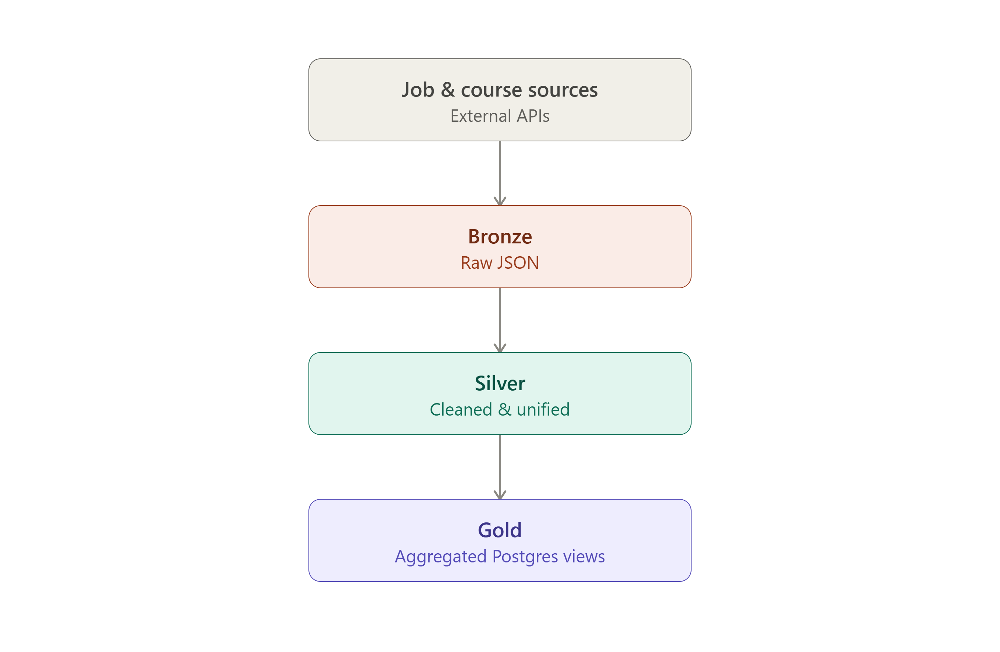

Upora Data Engineering Pipeline

Role: Data Engineer — designed and built the full pipeline
Context
Upora is a career-intelligence product for Nigerians targeting UK/US/Africa job markets, offering skill-gap analysis between current and target roles with course recommendations. It needed a reliable, low-cost pipeline to ingest and unify job and course data at scale.
Approach
- Designed the pipeline around Medallion architecture (Bronze → Silver → Gold), separating raw ingestion, cleaning/unification, and aggregation
- Built extract/transform logic across four job sources (Reed, Muse, Ashby, Greenhouse) and one course source (Coursera), including concurrent-worker scraping for course difficulty/duration enrichment
- Migrated the full pipeline off AWS to a self-managed VPS — cron scheduling, self-managed PostgreSQL, local disk storage — cutting infrastructure cost with a documented risk trade-off
- Diagnosed and fixed subtle data-integrity bugs, including a timestamp field that was silently overwriting on every run instead of only on real changes
Tech Stack
Python · PostgreSQL · Cron · Sentence-Transformers · Linux/VPS
Outcome
Fully cost-optimised, self-hosted pipeline replacing a cloud-dependent architecture, with stronger data integrity guarantees than the original design.
Built for DecisionSpaak Technologies — happy to walk through architecture decisions and trade-offs in an interview.